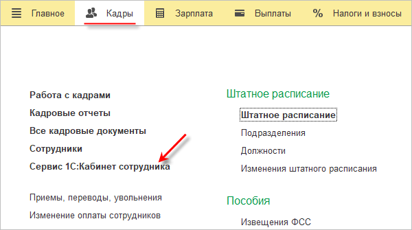
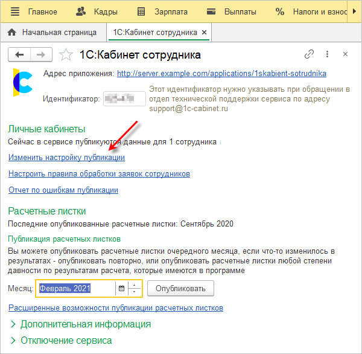
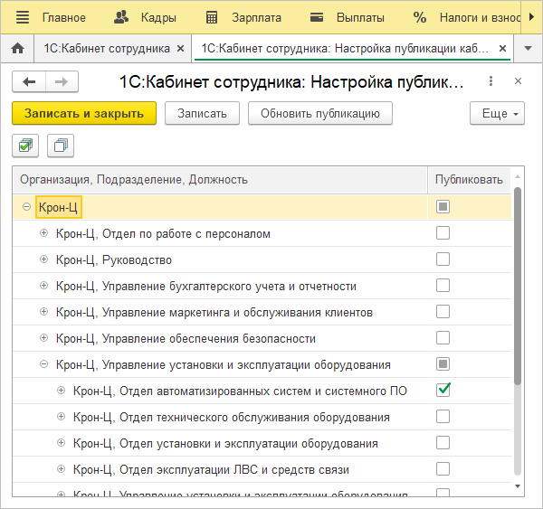
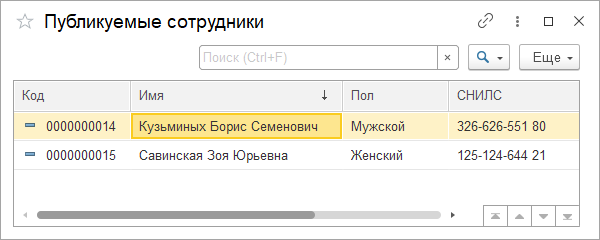

Публикация списка сотрудников в приложении «1С:Зарплата и Управление Персоналом 8»
Возможная проблема: Публикацию списка сотрудников выполняет пользователь с полными правами или с ролью Старший
кадровик.
Чтобы опубликовать список сотрудников, выполните следующие действия:
- Нажмите Сервис 1С:Кабинет сотрудника в разделах Кадры или
Зарплата;

- Нажмите Изменить настройку публикации;

- Для выбора публикуемых позиций установите флажки в колонке Публиковать;

Обратите внимание, что для публикации в сервисе в числе сотрудников ответственного лица, его позиция также должна быть выбрана здесь для публикации.
- По кнопке Публикуемые сотрудники вы можете просмотреть отобранных в результате сотрудников. Для них должен быть
указан адрес электронной почты и/или мобильный телефон. Если это условие не выполнено, строка будет выделена красным;

- Нажмите Обновить публикацию чтобы опубликовать выбранных сотрудников в приложении «1С:Кабинет сотрудника».